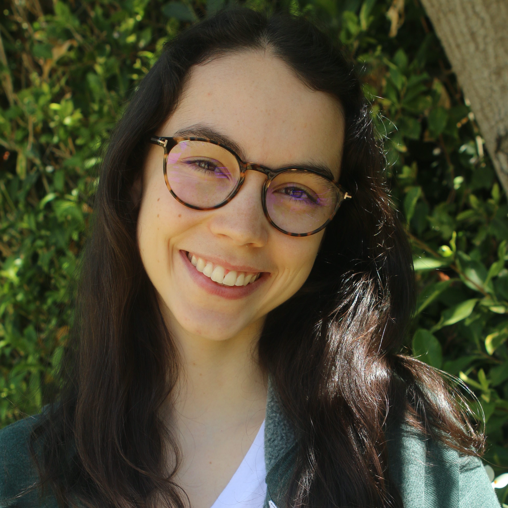
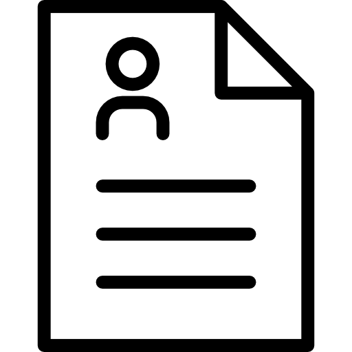

Emma O'Neil
 LinkedIn
LinkedInPDF Resume
I’m an undergraduate senior graduating in December 2022 from Los Angeles studying Statistics, Cognitive Science, and Computer Science at The Wharton School and the University of Pennsylvania through a dual degree.
My interests exist at the intersection of research, technology, entrepreneurship, and social impact. My research experience lies within human-computer interaction and computational social science. I am especially excited by research exploring the use of innovative technology to improve the lives of those living with mental health challenges and their communities. My honors thesis is using NLG with the goal of aiding peer counselors in generating messages employing the clinical skill of reflection. In Summer 2021, I conducted research at Carnegie Mellon’s Human-Computer Interaction Institute, developing a platform for training nurses to conduct motivational interviewing. I have continued research on the project, framing the evidence-based design rationale for the developed prototype. This summer I will be conducting research at University of Washington through the Design, Use, Build initiative.
I have spent time at non-profits, startups, and mid-size companies. I focused on the search and selection of entrepreneurs at Endeavor, building a curriculum to help empower the next generation of socially impactful entrepreneurs at Fulphil, and underscoring customer value in the enterprise software space at ServiceNow.
Other things I think a lot about are the societal impacts of technology and fostering an inclusive CS community. I am passionate about telling stories with data and care a lot about mental health advocacy. I have been volunteering at crisis hotlines since 2016 and am currently a Crisis Counselor at Crisis Textline. My mission is to advance mental health empowerment and support through technology.
View my coursework here.
Research
Honors Thesis in Cognitive Science | Aug. 2021 -
Application of natural language generation for peer-to-peer counseling. Primary advisor is Prof. Lyle Ungar.
CMU Human-Computer Interaction Institute Research | Aug. 2021 -
Research for design rationale of training platform for nurses learning motivational interviewing including
exploring applications of role-playing, peer feedback, and reflection. Working with PhD student Tianying Chen.
CMU Human-Computer Interaction Institute REU Fellow | June - Aug. 2021
Developed interactive prototype for platform to train nurses learning motivational interviewing.
Conducted and iterated on design through user testing with nurses at Highmark Health. Advised by Profs. Laura Dabbish and Robert Kraut.
Poster.
MindCORE Lila R. Gleitman Fellow | June 2019 - Aug. 2019
Piloted study examining whether people find it more difficult to make predictions for people who think differently from them.
Presented 15-minute talk at research symposium. Advised by Prof. John McCoy.
Slides.
USC Brain and Creativity Institute Research | June 2016 - June 2018
Conducted literature review of the effects of musical training on early reading development. Advised by Prof. Assal Habibi.
Internships
Endeavor: Entrepreneurship Selection & Growth | Dec. 2020 - May 2021
Wrote business profiles to inform evaluation in International Selection Panels,
researching business and local context. Pioneered project for targeting socially diverse entrepreneurs,
researching and presenting female and minority-founded companies with diverse technology applications to selection team.
ServiceNow: Value Management | May 2020 - Aug. 2020
Created executive summaries for 15+ customers across industries and anonymized template for
use by external marketing team. Pioneered database of insights from
customer-led presentations from the Knowledge 2020 digital conference.
Created product demos for the Value Management Platform.
Fulphil: Project Management | Aug. 2019 - June 2020
Created social entrepreneurship curriculum for distribution in schools across the nation and explored competitive offerings.
Curriculum included design thinking, stakeholder analysis, user interviews, understanding competition, KPIs, pricing, branding, UN SDGs, entrepreneurial mindset.
Curriculum. Impact report.
Other Data Projects
Mental Health Support on Reddit
A text analysis
of the social media mental health community: an exploration of mental health subreddits and a comparison with caption content of Instagram mental health influencers.
Understanding and Predicting Reported Mental Health
A report
on predicting reported days that one's mental health was not good (BRFSS CDC data) in the past month based on social and economic variables,
measures of the receival of clinical care, health factors, and the availability of mental health facilities offering resources by state (N-MHSS data).
Female Founders in Tech
A data exploration
of founder gender representation in the tech industry and internal perceptions in male and female-founded tech companies.
Vegan in Philly
A data exploration of vegan food in Philadelphia with Tableau.
Creative
Music
Studying violin for 16 years. Write, perform, and produce music.
Recognized as a semifinalist in February 2019 in the
International Songwriting Competition.
SoundCloud.
Photography
I love capturing nature and seeing others' nature photography. ND Awards International Photo Contest 2019 Honorable Mention for image taken in Iceland.
Sample of my photos.